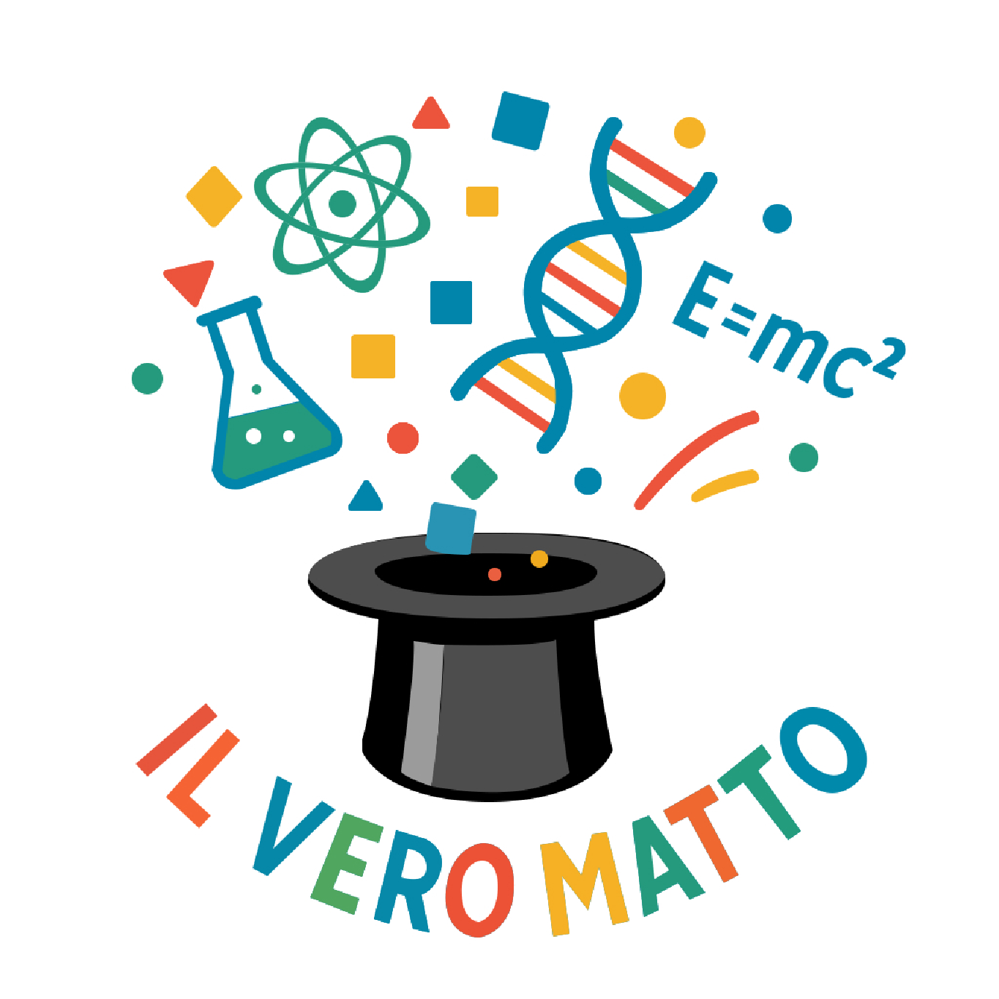
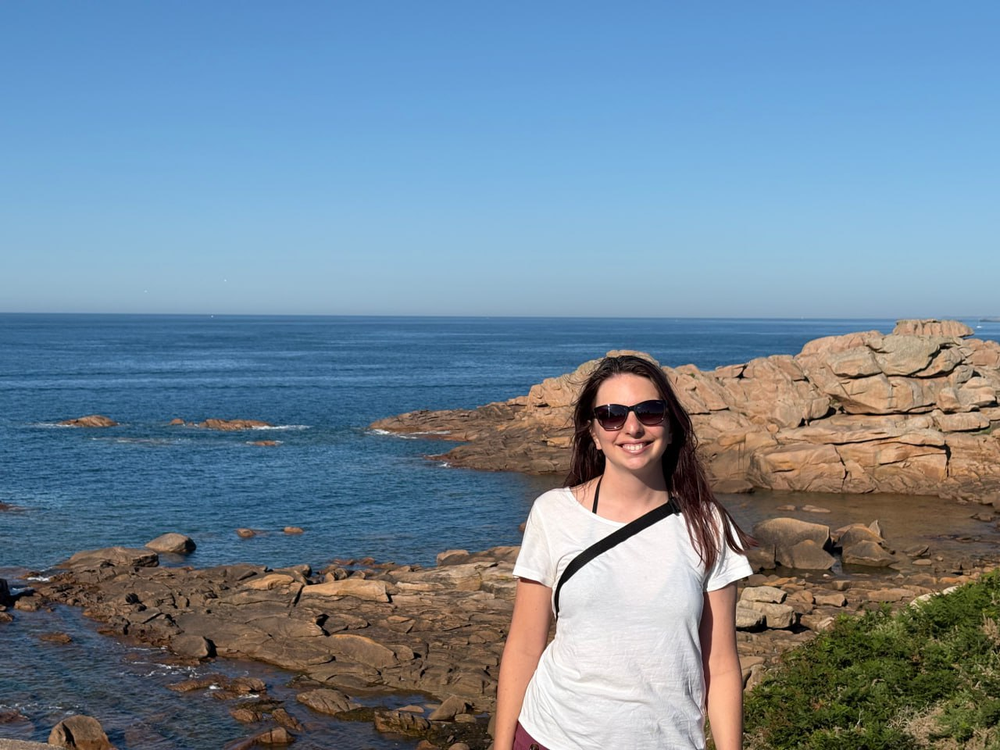
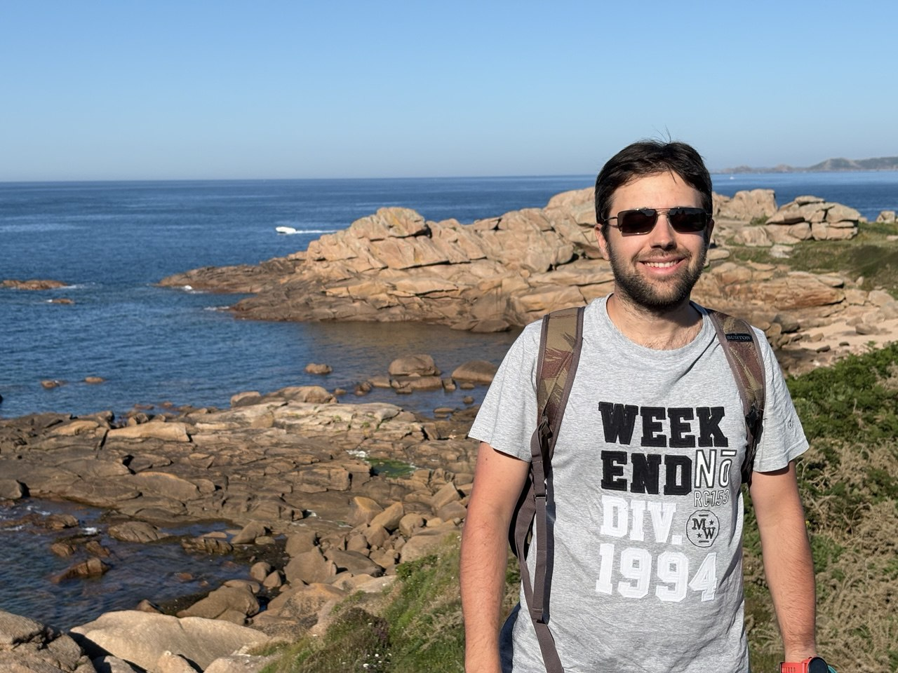

Veronica Grieco
VERO

Si vanta di essere nata in un giorno primo di un mese primo di un anno primo, ma non vi dirà quale. Ha scoperto l'amore per la matematica e la divulgazione all'università e da diversi anni inventa nel tempo libero laboratori per bambini e adulti con quel matto di Matteo. Attualmente insegna alle scuole medie e si diverte più di quanto fa credere. Ama la montagna (ma solo nei periodi dell'anno in cui ci sono pochi insetti), le storie che la fanno evadere dal mondo e inventarsi nuovi hobby ogni volta che si annoia.
Veronica Grieco
VERO
Si vanta di essere nata in un giorno primo di un mese primo di un anno primo, ma non vi dirà quale. Ha scoperto l'amore per la matematica e la divulgazione all'università e da diversi anni inventa nel tempo libero laboratori per bambini e adulti con quel matto di Matteo. Attualmente insegna alle scuole medie e si diverte più di quanto fa credere. Ama la montagna (ma solo nei periodi dell'anno in cui ci sono pochi insetti), le storie che la fanno evadere dal mondo e inventarsi nuovi hobby ogni volta che si annoia.
Matteo Provendola
MATT(e)O

Da grande sogna di diventare un White Hat, nel frattempo passa il tempo libero su progetti informatici che quella matta di Vero non sa apprezzare. Trascinato dalla sua dolce metà nella divulgazione scientifica, alla fine ha ammesso di divertirsi a far giocare gli adulti e i bambini con giochi matematici e scientifici. Ama viaggiare, i gattini e costruire un sito web per chiunque non ne abbia uno (compreso questo).
Matteo Provendola
MATT(e)O
Da grande sogna di diventare un White Hat, nel frattempo passa il tempo libero su progetti informatici che quella matta di Vero non sa apprezzare. Trascinato dalla sua dolce metà nella divulgazione scientifica, alla fine ha ammesso di divertirsi a far giocare gli adulti e i bambini con i giochi matematici. Ama viaggiare, i gattini e costruire un sito web per chiunque non ne abbia uno (compreso questo).
Collaborazioni


Copyright by "Il VeroMatto"